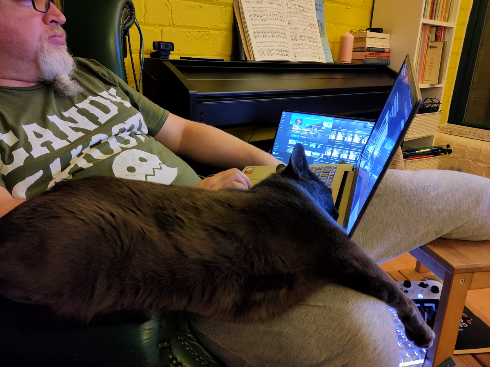

https://twitter.com/lingmops/status/1273646536489160704 @lingmops My dad went to Disneyland while I was a kid. It was a work thing but seemed suspiciously like a holiday to me...
The cat wants something, not sure what... 
#AnimalCrossing #ACNH #NintendoSwitch
Are you now or have you ever been opposed to fascism? https://twitter.com/Jose_Pagliery/status/1268269855762976770
This is completely unfair and you need to give the UK a couple of weeks to catch up. https://twitter.com/ScottGottliebMD/status/1268127676977623040
https://twitter.com/mrmarksteel/status/1267357786943389696 @mrmarksteel I may be a tad out of date but it was a Subgenius hotspot of the UK presumably as a response to the local scientologists. Even had "Bob" running in the local elections.
@el_burro_muerto it is like a Baneswell Express only you do not have to leave after buying booze.
I was just thinking that maybe virus/zarch would work well as a god view vr game.
this is not vr, but it is very zarch :) https://twitter.com/WhatsOnSteam/status/1266301799171932160
On #WorldDraculaDay let us remember that The Actor https://en.wikipedia.org/wiki/Henry_Irving died at the Midland Hotel https://web.archive.org/web/20120320035540/http://www.bradfordmidlandhotel.co.uk/sir-henry-irving-2 #Bradford accompanied by his manager Bram Stoker.
Irving was inspiration for the mesmerizing personality of Dracula and Stoker lived under his spell.
Well, this is a blast from the past. :) https://twitter.com/WhatsOnSteam/status/1264950229780049930
https://twitter.com/mousefountain/status/1264923925030592514 @mousefountain Mr. Potato
Jet Set Radio taught me that the secret to day time tagging is wearing hi viz and acting like you belong. https://twitter.com/LeeMadgwick/status/1263899510159413249
World goth day you say?
http://littlemiss.esyou.com/welcome
Some tracks from one of @shi old bands...
https://twitter.com/andrewcrawshaw/status/1263584715522498561 @andrewcrawshaw You have to make it palatable to the fascists, yeah, so what you do is.
BRING BACK NATIONAL SERVICE
but, right, one small change, you dont give them a gun you give them a laptop and force them to go make some art.
Causing total British domination of film / games / music / etc.
@el_burro_muerto That's the past hell, I'm living in this future hell where I wanted to try a USB-C monitor and having done a bunch of research I can confirm that it is a total clusterfuckery.
Yesterday I learned why pulling the SD card out of my phone to copy files to or from it is faster than using the phone cable.
Turns out most phones only have cosplay USB C ports that are actually just USB 2 under the hood.
IE 10x slower than you would expect from a USB C port.
So windows 10 is getting native GPU support in its linux subsystem?
Which means, at some point in the future, in order to get a malfunctioning steam game to run on windows 10, you may be recommended to install linux subsystem, install steam and use proton...
https://twitter.com/PatrickFreyne1/status/1263071973703389184 @PatrickFreyne1 I remember wondering why as a kid and later deciding it was a godfather reference but still not being sure why.
A quick search now shows up, "Oranges as harbinger of death" starting with the godfather, so, you know, it probably even makes sense :)
https://twitter.com/nachimir/status/1262405024283537409 @nachimir @shi Have you tried Satisfactory? Not quite the scope of NMS but the base building/exploring for resources feels very similar (and is better)
Added bonus, because it is all about automation, it rewards you for taking a break making a cup of tea and just watching the day go by :)